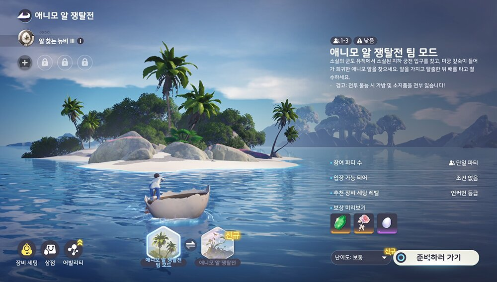

애니모 공략법 알쟁탈전 폼폼버드 우선처치, 카오스모드 스텔라열매 확률 상승 9월 30일 패치
9월 30일 업데이트 노트를 쭉 내려보다가 알 쟁탈전 항목에서 눈이 딱 멈췄는데요. 새로 들어온 몬스터 옆에 발견하면 먼저 잡으라는 권장 문구가 붙어 있고, 카오스 모드 쪽에는 스타저드가 스텔라 열매를 떨어뜨릴 확률이 올랐다는 줄도 있더라고요. 이미 돌고 계신 분들이라면 판마다 신경 쓰일 만한 변화라서, 이번 패치에서 이 항목에 들어간 4가지를 순서대로 풀어볼게요.
9월 30일 패치로 알 쟁탈전에서 바뀐 건 뭐예요?
2026년 9월 30일 패치(v1.0.3629693.0)에서 알 쟁탈전은 수정 2건, 추가 1건, 상향 1건으로 총 4가지가 바뀌었습니다. 공지에 적힌 순서대로 표에 담아봤어요.
| 구분 | 바뀐 내용 |
|---|---|
| 수정 | 엘리트 「옵시디언 스타저드」가 제어 효과를 가끔 먹던 문제 |
| 수정 | 간혹 외곽 섬에 지하 궁전 입구가 나타나지 않던 문제 |
| 추가 | 다수의 대상을 지원하는 기믹을 지닌 몬스터 「폼폼버드」 (발견 시 우선 처치 권장) |
| 상향 | 카오스 모드에서 「스타저드」가 「스텔라 열매」를 드롭할 확률 |
수정 두 건은 둘 다 판 도중에 은근히 거슬렸을 만한 부분이네요. 옵시디언 스타저드는 이제 제어 효과가 가끔 들어가던 일이 없어지는 셈이라, 제어 스킬로 묶어 잡던 분들은 예전만큼 잘 안 먹힐 수 있거든요. 지하 궁전 입구는 외곽 섬에서 간혹 안 보이던 문제가 고쳐졌으니, 전에 입구를 못 찾고 돌아섰다면 다시 들러 보셔도 됩니다. 나머지 두 건은 아래에서 따로 볼게요.
알 쟁탈전 항목은 패치노트 중간쯤에 따로 묶여 있어요.
폼폼버드는 어떤 몬스터고, 왜 먼저 잡으라는 걸까요?
폼폼버드는 9월 30일 패치로 알 쟁탈전에 새로 추가된 몬스터이고, 공식 노트가 발견하면 우선 처치하라고 권장한 대상입니다. 공지에 적힌 이유는 '다수의 대상을 지원하는 기믹'을 가졌다는 한 줄뿐이네요. 한꺼번에 여러 마리를 도와주는 타입이라 먼저 정리하라는 권장으로 보이는데, 구체적으로 무엇을 해 주는지까지는 적혀 있지 않더라고요.
처음 만나면 주변 몬스터와 어떤 식으로 엮이는지부터 봐두세요.
참고로 도감에 있는 폼폼버드는 이런 지원형이에요. 아래는 도감 기준 참고용이라, 이 모드에서 만나는 폼폼버드와 똑같다는 보장은 없습니다.
| 도감 항목 | 내용 |
|---|---|
| 원소 · 포지션 | 물 원소 · 에너지 재생 |
| 성장 단계 | 성장기 |
| 속성치 합계 | 540 (HP 120 · 무력화 50 · 공격 90 · 마법방어 90 · 물리방어 80 · 에너지회복 110) |
특성 버블은 12초마다 목욕 상태에 들어가고, 다음 스킬을 쓰면 물웅덩이를 만들어요. 뽀글뽀글존은 영역 안에서 아군이 물 원소 스킬을 쓰면 거품이 생기고(최대 6개, 15초), 다시 입력하면 터지면서 거품 하나당 에너지 4를 회복시켜 주고요. 거품 발사는 적의 이동속도를 15%, 에너지 회복속도를 20% 깎고 아군 이동속도는 15% 올려 줍니다. 요란한 거품은 30초 동안 파티원의 물 원소를 16% 강화해 주는 스킬이에요.
물 원소 강화와 에너지 회복, 이동속도 쪽에 몰린 구성이라 '지원'이라는 공지 표현과 결은 맞아 보이네요. 다만 어디까지나 도감 값이라 실제 기믹이 같다고 단정하기는 어려워요.
확인 위치: 알 쟁탈전 인게임 · 확인되면 아래에 채워주세요.
| 항목 | 값(확인 후 입력) |
|---|---|
| 실제 기믹 | — |
| 출현 위치·모드 | — |
카오스 모드 스타저드가 스텔라 열매를 더 잘 떨어뜨리나요?
9월 30일 패치로 카오스 모드에서 스타저드가 스텔라 열매를 드롭할 확률이 올랐습니다. 카오스 모드는 알 쟁탈전 등급 4번째 대단계인 알 수색 엘리트를 달성하고 카오스 승선권을 소모해야 들어가는 최고 난이도 모드인데요, 천휘 애니모 알과 프리즘 등급 수집품이 더 잘 나오는 대신 탈출 조건이 엄격한 곳이죠. 입장 조건은 애니모 카오스모드 해금조건, 알쟁탈전 티어4 알수색엘리트부터 글에 자세히 정리해 뒀어요.

출처: 인벤 체험기
스샷 3: 카오스 모드 화면이 아니라 CBT 알 쟁탈전 기본 화면이에요. 정식판과 다를 수 있어요.
다만 얼마나 올랐는지는 노트에 '높였습니다'라고만 적혀 있고 퍼센트는 아직 나오지 않았어요. 스텔라 열매는 팬 데이터베이스(questlog)의 9월 24일 스냅샷에서 진화 재료로 분류돼 있더라고요.
스타저드는 도감 기준으로 어둠 원소 딜 포지션이고 속성치 합계는 505예요. 공격 수치는 125이고, 특성 '마법의 대가'는 스킬 종료 후 5초 동안 일반 공격이 맞으면 위력 6의 추가 피해를 줍니다. 평소 출현 지역은 스타폴 숲이에요.
설명창에 쓰임이 적혀 있다면 이 장면 하나로 정리돼요.
확인 위치: 인게임 아이템 설명 · 이후 공식 공지
| 항목 | 값(확인 후 입력) |
|---|---|
| 열매 용도 | — |
| 드롭 확률 | — |
알 쟁탈전을 돌기 전에 체크해 두면 좋은 것들
카오스 모드 입장 준비부터 폼폼버드 대응, 스타저드 사냥, 열매 확인, 지하 궁전 입구까지 다섯 가지를 챙겨 두시면 좋아요.
- 카오스 모드에 들어가려면 알 수색 엘리트 등급과 카오스 승선권이 먼저 준비돼야 해요
- 폼폼버드가 보이면 다른 몬스터보다 먼저 처치하고, 처음 만났다면 어떤 효과를 내는지 팀원과 바로 공유해 두면 좋아요
- 알 쟁탈전에서 엘리트 옵시디언 스타저드를 만나면 제어 스킬만 믿기보다 딜로 정리할 구성을 생각해 두는 쪽이 낫겠네요
- 스텔라 열매가 나오면 아이템 설명창부터 열어 쓰임을 보는 것도 방법입니다
- 외곽 섬에서 지하 궁전 입구가 정상으로 보이는지도 한 번쯤 체크해 볼 만하죠
열매가 몇 번 나오는지 판마다 메모해 두면 나중에 비교가 쉬워요.
같은 날 패치에 또 뭐가 들어갔어요?
알 쟁탈전 말고도 9월 30일 패치에는 홈 시즌 조정과 신규 스킨 출시, 업데이트 보상이 함께 들어갔네요.
- 홈 시즌 이벤트에서 진행도를 채우는 데 필요한 보름달 포인트 수집량이 줄었어요
- 한정 스킨 「몽환의 숲」과 스킨 세트 「프로스트 펑크」가 나왔고, 프로스트 펑크는 상점 추천 탭에서 광휘 수정 680개로 살 수 있어요
- 1.1 버전 업데이트 전에 가입한 모험가는 업데이트 보상으로 휘석 100개를 받아요
자주 묻는 질문
Q. 폼폼버드는 알 쟁탈전 어디에 나오나요?
패치노트에는 출현 위치도, 어느 모드에 나오는지도 적혀 있지 않아요. 도감 기준 폼폼버드의 평소 출현 지역은 조화의 언덕인데, 알 쟁탈전에서 나오는 자리와 같은지는 공개된 바가 없습니다.
Q. 스텔라 열매 확률은 몇 %로 올랐나요?
공식 확률 안내 페이지에 실린 드롭표는 엘리트 장비와 스파클뿐이고 스타저드·스텔라 열매 항목은 없어서, 올랐다는 사실 말고는 공식 수치가 아직 없거든요.
Q. 카오스 모드는 언제부터, 어떻게 들어가나요?
9월 24일 오전 5시(한국 시간)에 열렸고, 알 수색 엘리트를 달성한 뒤 카오스 승선권을 쓰면 입장해요. 승선권 가격과 구매처는 아직 공개되지 않았습니다.
정리하면 이번 패치는 이 모드에 새 몬스터 하나와 열매 확률 상향이 더해진 정도인데, 알 쟁탈전을 도는 분들에겐 판 흐름이 달라질 만한 변화네요. 폼폼버드부터 눈에 담고 스타저드 열매가 나오는지 지켜보면 금방 감이 오실 거예요. 새로 알려지는 내용이 있으면 다시 정리해서 들고 올게요, 즐겜하세요~
✔ 애니모 같이 보기 좋은 내용
· 애니모 생활티어표 정식출시판 정리, 홈능력 담당부터 탐사스킬 이동능력까지
· 애니모 전투 티어표 재정리, 정식 출시판 도감 수치로 본 포지션별 추천
· 애니모 천휘 플로리안 출현 위치, 로즈타워 숲 풍요로운 지맥 주간 활용법
참고한 곳
· 애니모 스팀 공식 뉴스(9월 30일 패치노트)
· 애니모 공식 위키 NO.081 폼폼버드
· 애니모 공식 위키 NO.006 스타저드
· 애니모 공식 확률 안내